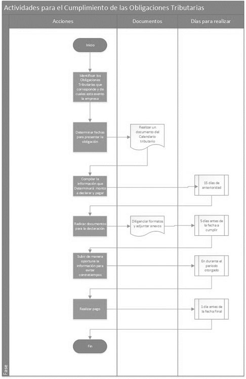

PROCESOS TRIBUTARIOS
DIAGRAMA DE CUMPLIMIENTO DE LAS OBLIGACIONES TRIBUTARIAS
Diagrama de Procesos para el cumplimiento de las Obligaciones tributarias se realiza con el fin de determinar el paso a paso y que debe tener en cuenta el área contabilidad a la hora de declarar las obligaciones de la empresa ante la DIAN. Y de esta manera el proceso sea eficiente, eficaz y por lo tanto efectivo.

Tabla 12 Fuente: Propia
El propósito de este diagrama es inicialmente la declaración oportuna de cada una de las obligaciones que le corresponde a la empresa. Sin embargo, es importante la compilación de la información ya que de aquí parte el cumplimiento. Por lo general la persona encargada tienen presente las fechas y en ocasiones declara sobre el tiempo o ya pasado este, generando sanciones, lo que provocaría gasto adicional de dinero o en el peor de los casos procesos jurídicos.
Pautas para contrarrestar y Atender acciones Fiscales
Tributarias
- Realizar la inscripción en el Registro Único Tributario de acuerdo a su actividad y antes de Iniciarla. Art. 19 E.T.
- Llevar Contabilidad conforme a las prescripciones legales.
- Atender Requerimientos de informaciones y pruebas relacionadas con investigaciones que realice la Administración de Impuestos Art 686 E.T.
- Reportar Información pone a disposición de los contribuyentes inscritos en el RUT, de acuerdo a la Resolución 112 del 2015.
- Retener y liquidar el impuesto aplicando la tarifa de retención correspondiente. Art 375 E.T.
- Declarar el impuesto del cual ha actuado como agente retenedor.
Aduaneras
De acuerdo al artículo 485 del Estatuto Aduanero:
- Inscribir su condición de comerciante en el Registro Único Tributario.
- Liquidar y recaudar el impuesto que se cause.
- Efectuar la consignación de las sumas recaudadores de acuerdo con lo previsto en el Estatuto Tributario.
- Llevar un libro de registro de ingresos y salidas donde deben registrarse las operaciones de importación, compras y ventas, el cual sustituye para todos los efectos aduaneros la contabilidad de los comerciantes.
Cambiarias
Lo acordado en el Artículo 8 en el Estatuto Cambiario:
- Presentación dentro de la oportunidad legal en los términos y condiciones señalados por el régimen cambiario. Decreto 2245 de 2011.
- La canalización deber realizarse a través de las entidades vigiladas por la Superintendencia. Articulo 8 Estatuto Cambiario.
- Las entidades para la canalización deben tener como objeto exclusivo la realización de operaciones de cambio. Articulo 8 Estatuto Cambiario.